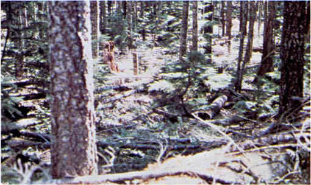
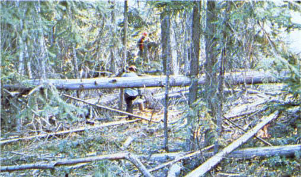
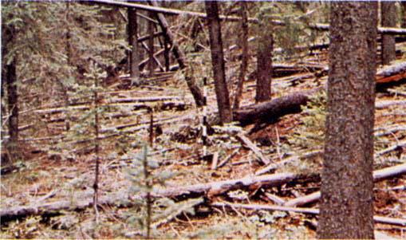

The fires burn in the surface and ground fuels with greater fire intensity than the other timber litter models. Dead-down fuels include greater quantities of 3-inch (7.6-cm) or larger limbwood resulting from overmaturity or natural events that create a large load of dead material on the forest floor. Crowning out, spotting, and torching of individual trees are more frequent in this fuel situation, leading to potential fire control difficulties. Any forest type may be considered if heavy down material is present; examples are insect- or disease-ridden stands, windthrown stands, overmature situations with deadfall, and aged light thinning or partial-cut slash. The fuel model G is depicted in photographs 28, 29, and 30.

Photo 28. Old-growth Douglas-fir with heavy ground fuels.

Photo 29. Mixed conifer stand with deaddown woody fuels.

Photo 30. Spruce habitat type where succession or natural disturbance
can produce a heavy downed fuel load.